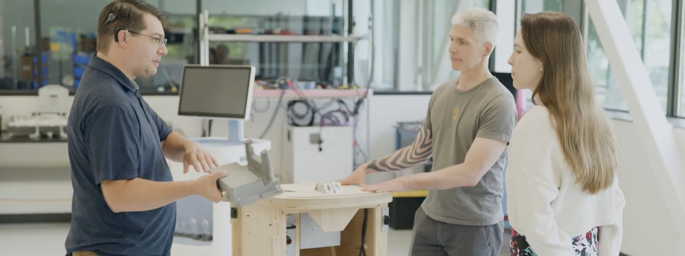
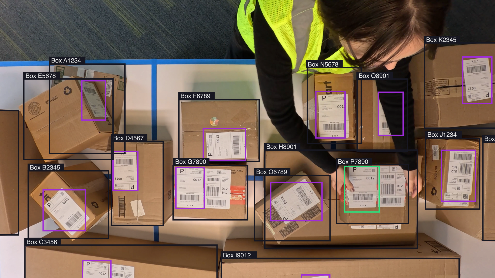
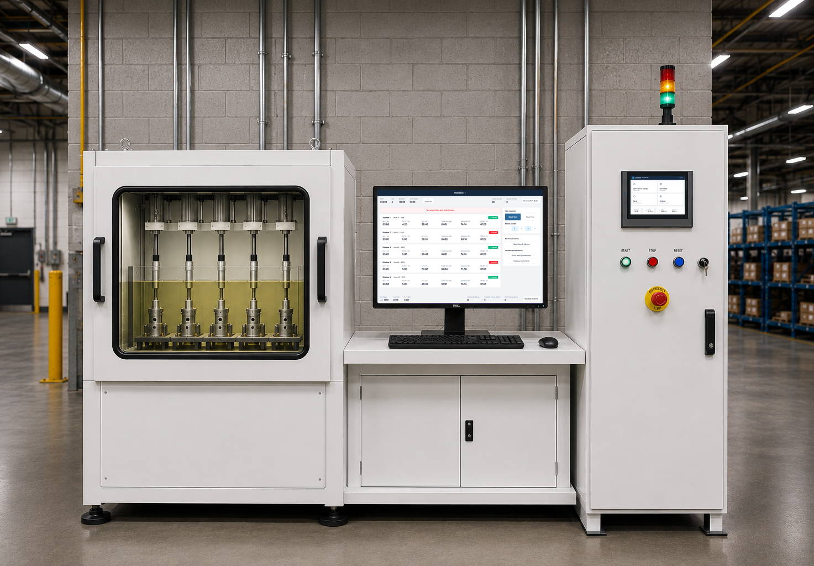
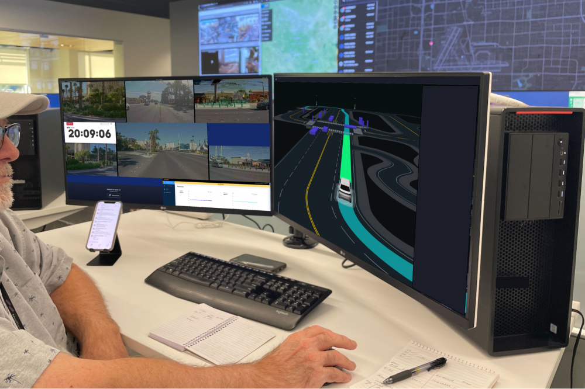
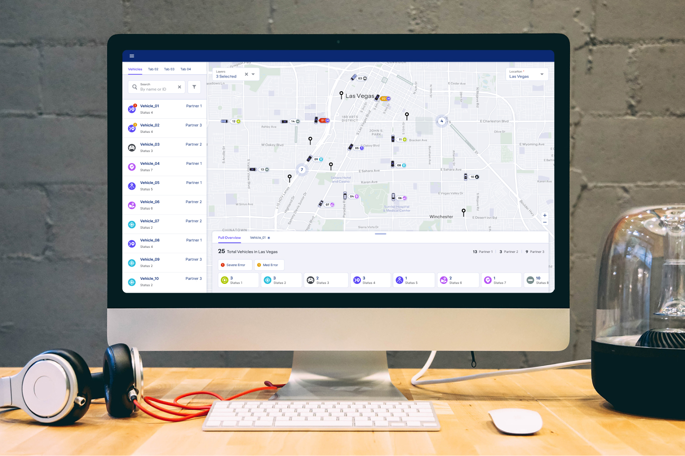
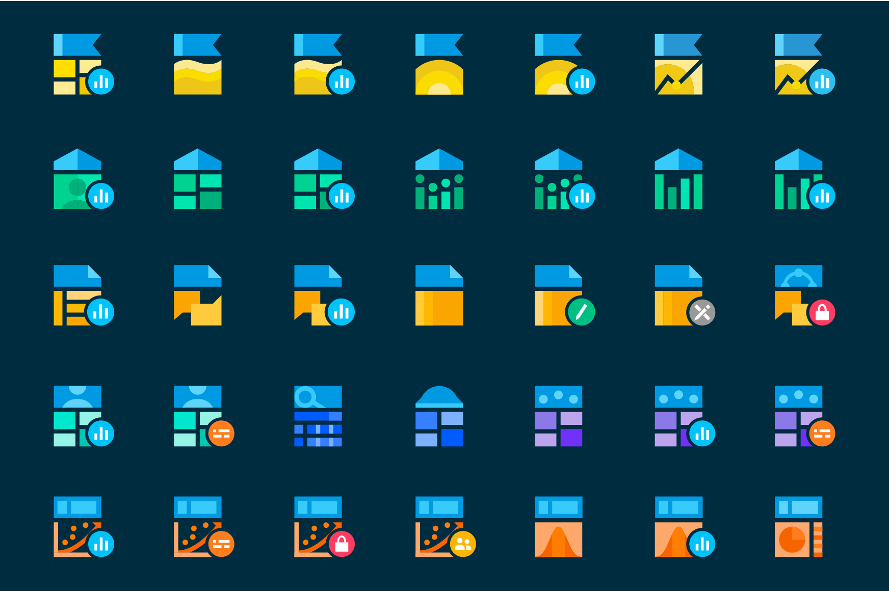
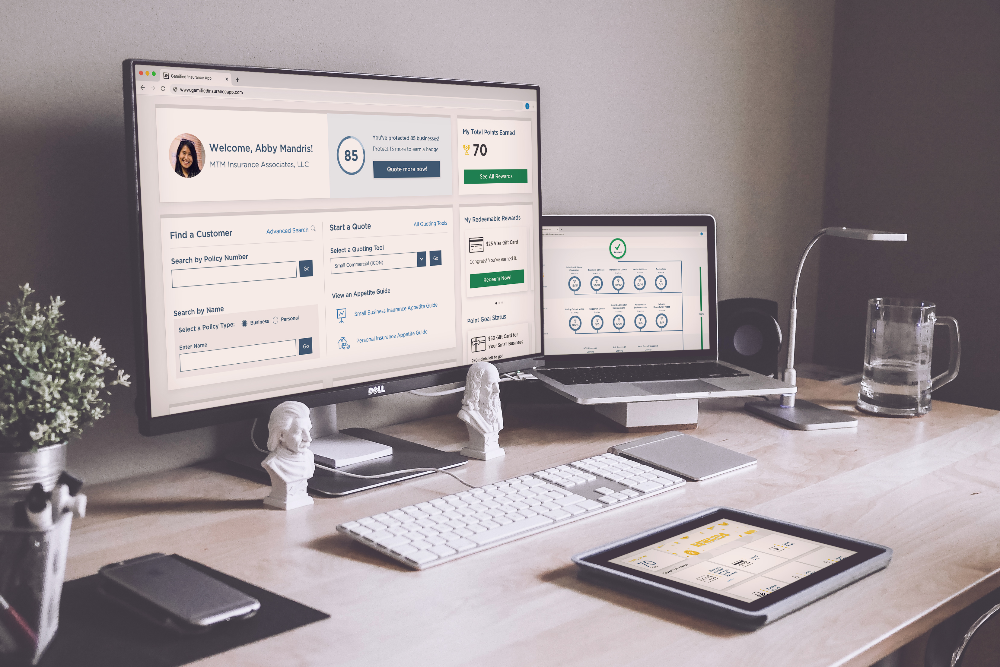
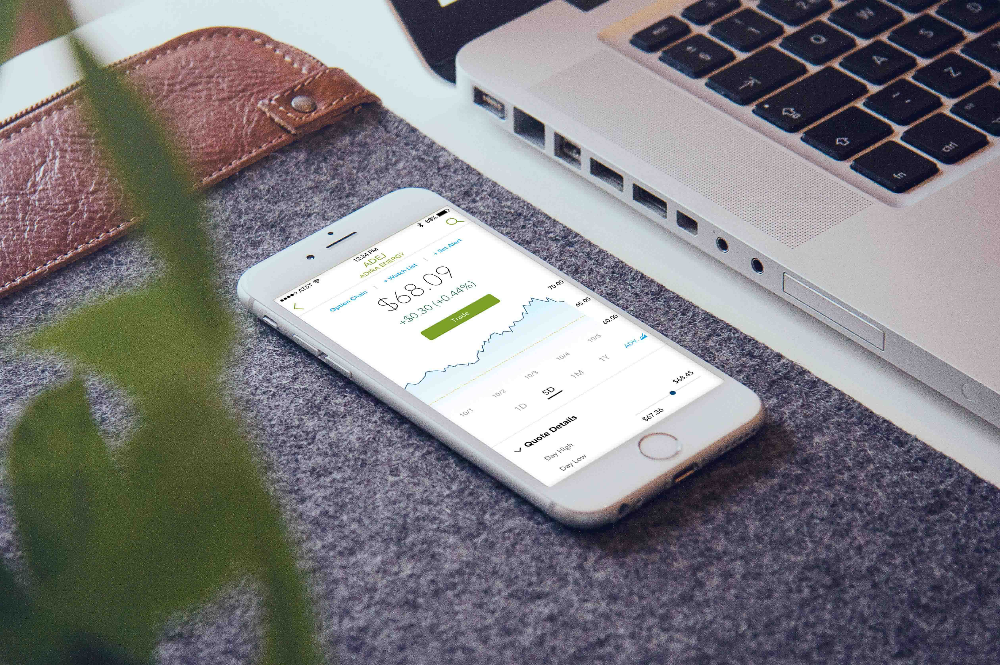
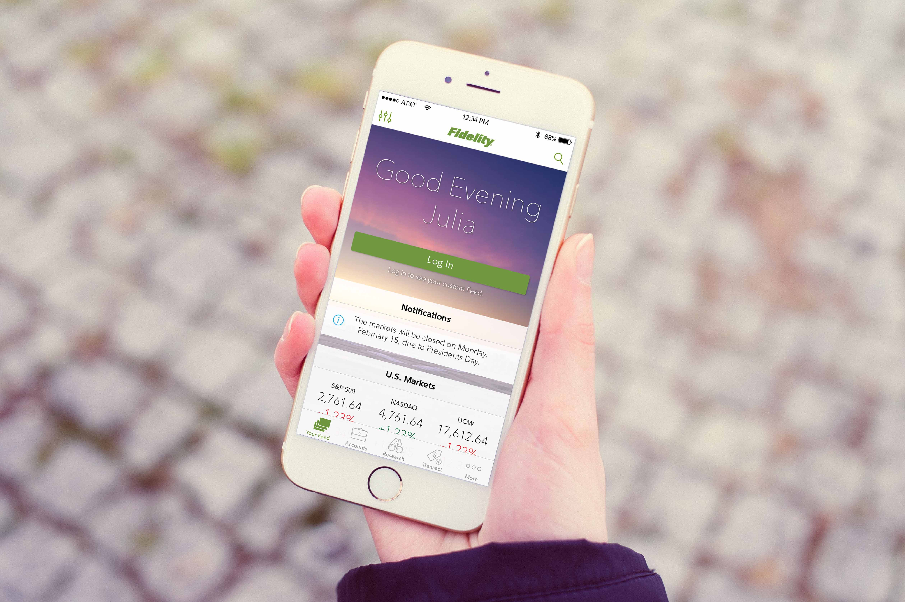

Julia Nelson
Principal UX Designer
UX designer and researcher bringing clarity to complex, physical-digital products; guiding teams to confident decisions before they build.


Experience
As Product Insight's first UX designer, I define what UX means at the company. Leading a small design team, my work spans digital and physical, from 100+ screen interfaces and projection systems to physical design, human factors, and products where people interact directly with physical AI or robotic systems.
Selected projects

Accelerating Delivery Workflows with Assistive Technology
Led UX design for two last-mile delivery projects, applying assistive technology to help drivers move faster and work more comfortably at each stop. Time per stop dropped from 5 minutes to 1 minute, and perceived physical and mental effort fell 67% across engagements.

Aerospace Testing Process Overhaul
Led field studies with operators to uncover workflow issues. Resolved them through updated procedures, a redesigned HMI, and close collaboration with software engineering to fix underlying bugs. Testing throughput improved 6×, along with ease of use and training time.
At Motional, I designed the future of autonomous vehicle operations. My first focus was redesigning the fleet monitoring software used by our operations team. I was then promoted to lead the Remote Vehicle Assistance team, building tools that help remote operators support vehicles in need on the road.
Selected projects

Remote Vehicle Assistance
Led the design of software that lets remote operators work through challenging autonomous vehicle scenarios with dynamic tools, resolving 98% of cases in under 45 seconds.
View case study
Fleet Monitoring Redesign
Redesigned the fleet monitoring tool used by operations teams to manage autonomous vehicle fleets, establishing a new design system and leading key feature development—an 8× increase in users.
View case studyWhile consulting at Accenture I mentored junior designers through an apprentice program, co-hosted Practice Makes (a design meetup), and led design teams in designing accessible products across various industries.
Selected projects

150+ Icon Set & Design System
Created a comprehensive icon library and design system to unify a fragmented platform of investor applications into a cohesive user experience.
View case study
Bose Hear
Designed an accessible mobile app for hearing enhancement, focusing on user testing, localization, and an intuitive experience for diverse users.
View case study
Insurance Gamification
Created a gamified experience to engage customer service representatives and drive measurable behavioral change through a three-week design sprint.
View case study
Clinical Trial Application
Designed a cloud-based application that accelerates clinical trial insights through seamless data ingestion and real-time performance visibility for pharmaceutical organizations.
View case studySelected projects

Fidelity Investments Quote
Led the redesign of the Quote section of Fidelity’s mobile app, delivering pixel-perfect designs for Equity Quotes through end-to-end collaboration with business teams and developers.
View case study
Fidelity Investments Feed
Led the creation of the first-ever personalized feed for a financial app, solving the confusing homescreen problem through extensive user research and testing.
View case studyFreelance & Personal Projects
Continuous Learning
-
🤖
AI Tools for Design & Development — Experimenting with Cursor, Lovable, V0, Claude, ChatGPT, and other AI tools for UX research, design ideation, and development workflows
-
🎓
Leadership Essentials Certificate — Enrolled in a 4 month online course through Cornell University (eCornell) while working at Motional to become a stronger leader and mentor (2023).
-
💡
CLEAR Leadership Program — Selected to participate in Ali Levin's leadership and coaching program at Motional (2023).
-
👥
Management Training — Participated in a week-long in-person course at Motional (October 2022)
-
👩💻
New Programs — Recently learned ProtoPie for complex multi-device prototyping, continuing to learn Blender for 3D modeling.
-
💻
Front-End Development — HTML, CSS, JavaScript through One Month and General Assembly and have continued enhancing my skills with new frameworks and tools.


Community & Leadership
Design Community
At Accenture, I was a co-host of Practice Makes, a bi-monthly design meetup connecting designers, artists and fostering community.
Company Culture
At Motional, I was part of the social committee, organizing and planning new company events. I also started hosting monthly board game nights at my past two companies and regularly host craft nights.


Outside of Work
I'm always up for an adventure or learning something new. Here are a few of my favorite things to do:
- 🚴Biking
- 🛼Skating
- 🏍️Riding my motorcycle
- 🛴E-Scooting
- 🎶Going to Concerts
- 🧶Learning new crafts
- 🎲Board games
- 🎮Video games
- 🎬Watching thrillers
- 🎧Audiobooks
- 🎨Painting
- 🌱Gardening
- 🥗Plant-based cooking
- 🏋️Weightlifting
- 📷Photography
- 🗺️Planning trips


Let's Connect
If you're interested in collaborating or simply want to connect, don't hesitate to reach out!